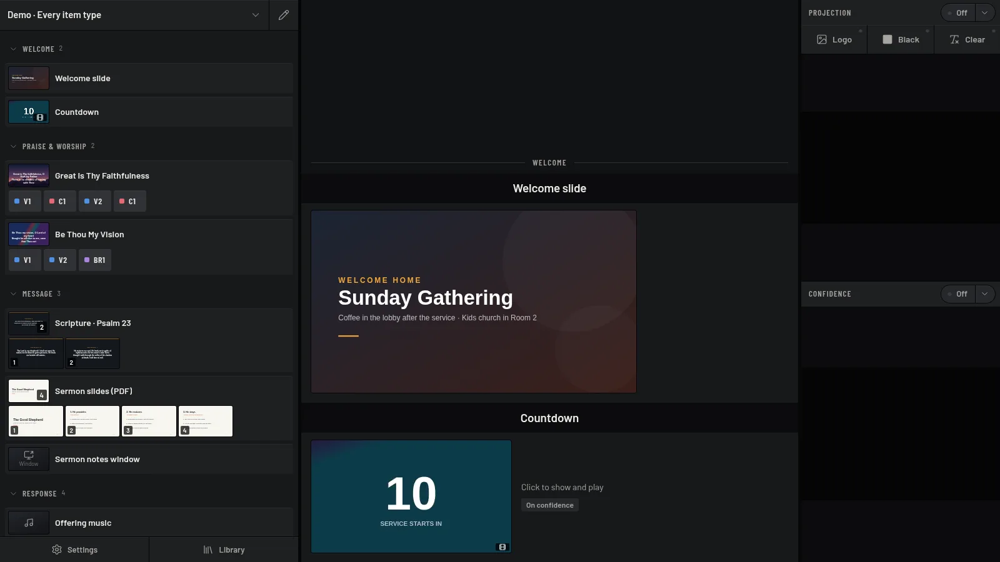

Songs that know their parts
Verses, choruses and bridges, each with its own colour. Set the usual order once, change it for one Sunday without touching the library. Past services keep the words they used.
PALTO puts lyrics, videos and slides on the projector, the stage screen and the livestream. It runs on the church computer with no internet needed, and the worship team prepares the songs from their phones.
Free and open source. Windows 10 and 11, 64-bit.

Songs, scripture, announcements, countdowns, the sermon slides and the offering video all sit in one service order. Press the space bar, a clicker or a phone to move on.
Verses, choruses and bridges, each with its own colour. Set the usual order once, change it for one Sunday without touching the library. Past services keep the words they used.
Start from your usual order: Welcoming, Praise & Worship, Message, Closing. Tick this week's parts, fold sections away, and add a part back when the program changes.
The congregation sees the lyrics. The singers see the current and next slide on a confidence screen. Logo, black and clear are one press away.
Countdown videos, background loops, music, PDF slides and a shared screen, all played smoothly on modest hardware.
Pair a phone on the same Wi-Fi to see what is showing, jump to any song or slide, and switch to black or logo from anywhere in the room.
The PALTO plugin for OBS shows the lyrics, the song credits and the current section as OBS text, styled the way your stream looks.
Map any key, presentation clicker, MIDI pad or Stream Deck button. Bitfocus Companion talks to PALTO over OSC.
Song leaders add lyrics, set arrangements and plan services from any browser. Singers open the lyrics and see what is on screen right now.
PALTO keeps its own copy of everything. If the connection drops mid-service, nothing changes on screen, and edits go up when it comes back.
Everyone works on the same service. PALTO stays in charge once it goes live.
The song leader picks the songs and the order of verses and choruses in the team library, from a phone or a laptop.
The church computer picks up every change on its own, videos included, and keeps working if the internet goes away.
Keyboard, clicker, Stream Deck or phone. While PALTO runs a service live, nobody can change it from the web.
Lyrics on the projector, the next line on the stage screen, the same words on the livestream, and on singers' phones.
PALTO is tested against a modest church PC, not a studio workstation.
Windows may warn that the installer is from an unknown publisher. Choose More info → Run anyway. The guide explains why.
The presentation app for the church computer. Updates itself after that.
Download installer Latest release on GitHubA plugin for the livestream computer. Needs OBS 30 or newer on Windows.
Download plugin All releases on GitHubRuns in the browser and installs on phones. Each church hosts its own; ask your admin for the address, or set one up with the guide.
Set up a team library